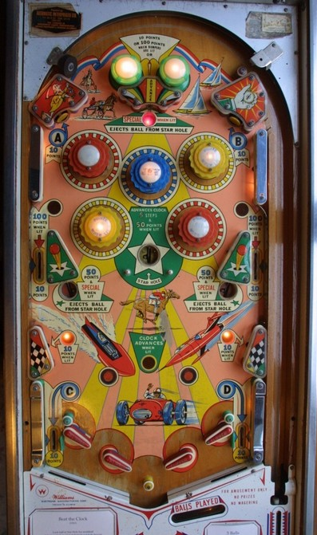

This is en electromechanical game, and is not to be confused with the solid state Beat the Clock (Bally Midway, 1985).
Most features on Beat the Clock revolve around the clock mechanism located in the backglass. Features are lit or scored based on where the indicator on the clock is pointing. It takes 4 advances to move from one number on the clock to the next, for a total of 48 advances to make one revolution. There are 2 main ways to advance the clock.
Each advance of the clock rotates which of 4 features in the upper half of the playfield is lit for additional score. The 4 options are the red or yellow bumpers being lit for 10 points instead of 1, or the middle left and right side lanes being lit for 100 points instead of 10. Only one of these features can be lit at a time.
The clock feature does not reset in any way between balls or games, making it a carryover award. Advancing the clock hand to the 12 will light the 6 on the clock, and also lights the left and right saucers to score a Special in addition to their usual 50 points + releasing the locked ball in the Star Hole. The Special unlights once it is collected, and I believe Special can only be worth a free game. If 6 is lit on the backglass clock, advancing the clock hand to point at the 6 scores an instant Special.
The upper left and right standup targets award 10 points as well as the letter A (left) and B (right). The left and right out lanes score 10 points and award C and D respectively. Collecting C and D also lights the wall switches just above the out lanes for 10 points instead of 1. Making all of A-B-C-D in a single game lights the center top lane for a Special.
Beat the Clock has 4 flippers, two on each side. All four flippers are 2-inch mini flippers. The flippers are spaced so that it is just barely possible for a ball to drain between the two flippers on a given side while the flippers are lowered; a ball can absolutely drain between the two flippers on a side if said flippers are raised. Balls cannot be trapped on the lower flippers; it is theoretically possible, but immensely difficult, to trap a ball on an upper flipper against the post that forms the out lane entrance. There is also a large center peg between the two lower flippers and directly above the out hole.
There is no extra ball feature or end of ball bonus. Tilt ends game.
The below picture of Beat the Clock's playfield was taken from the Internet Pinball Database, where it was originally provided by Simon Haxton.
